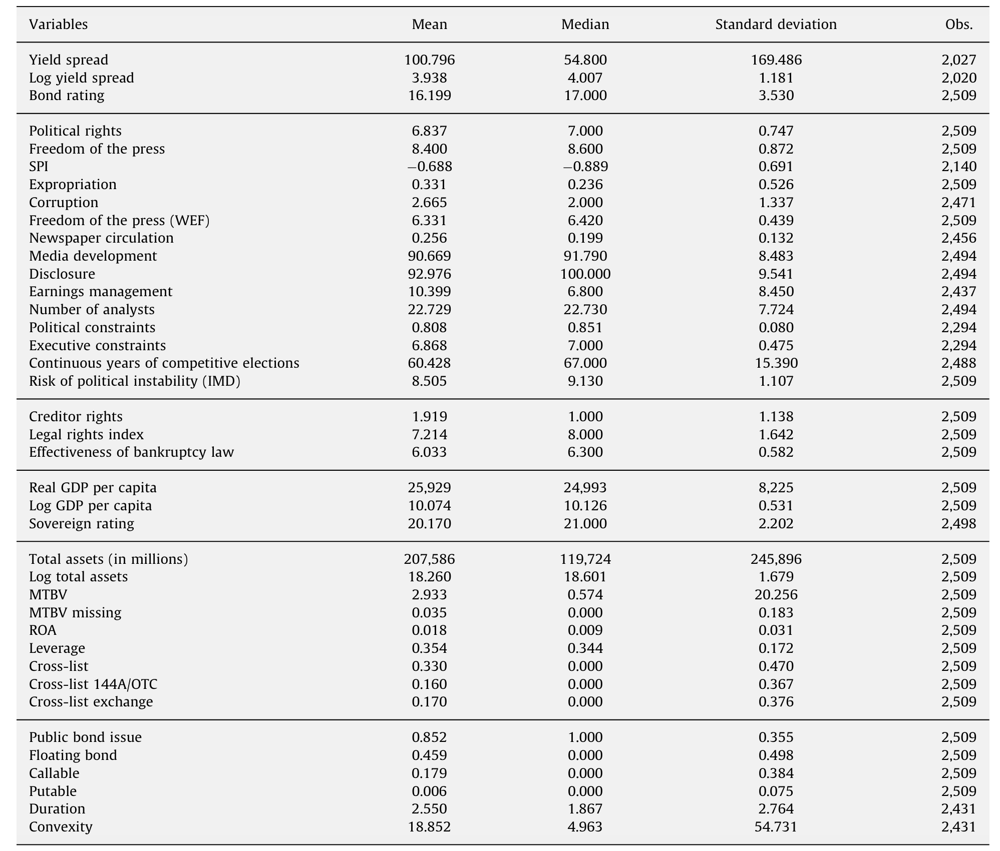
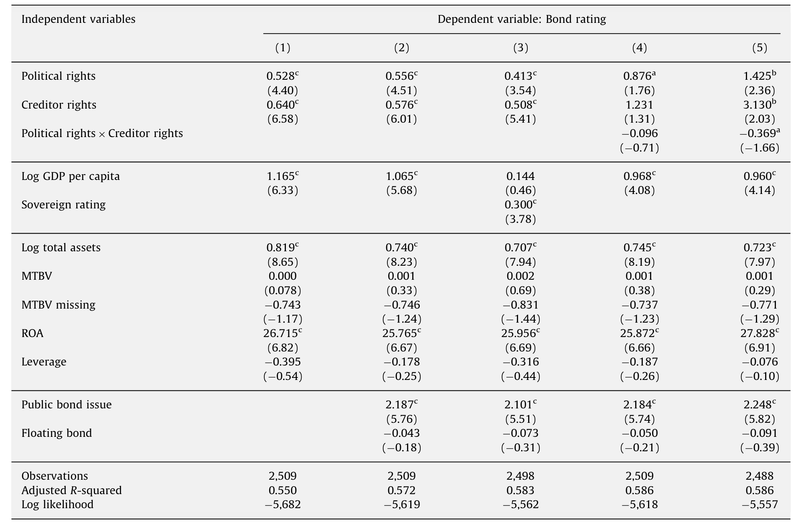
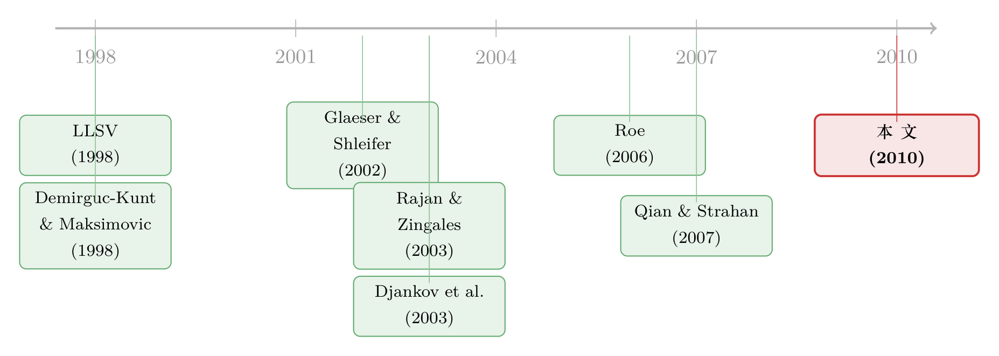

你的借钱成本，写在国家的「政治账本」里
本文读的是 Qi, Roth & Wald (2010, Journal of Financial Economics)：用 39 个国家、美元计价的公司欧洲债券 (Eurobond) 做样本，他们发现一国的政治权利 (political rights) 越大，企业发债的收益率利差 (yield spread) 越低——政治权利上升一个标准差，利差下降 18.6%，这个量级和债权人法律保护几乎旗鼓相当。更妙的是，政治制度与法律制度是替代品：法律越弱的国家，政治权利的边际改善越值钱。
1 一个尴尬的对照
先讲一个让人有点错愕的对照。
在这篇文章的样本里，中国的政治权利得分是七分制里的最低分——1 分；可它的债权人权利 (creditor rights) 评级在四分制里却有 2 分。法国呢？政治权利满分 7，债权人权利却是 0。
于是问题就这样赤裸裸地摆在桌面上：一家公司去国际市场借美元，它要付多高的利息，到底是由「这个国家的法律有多保护债主」决定的，还是由「这个国家的政治有多自由」决定的？
这不是一个咬文嚼字的问题。长期以来，研究「法与金融 (law and finance)」的人分成了两派。一派——也就是后来被反复引用的 LLSV (La Porta, Lopez-de-Silanes, Shleifer, Vishny, 1997, 1998)——坚持法律起源 (legal origins) 决定一切：普通法系比大陆法系更保护投资者，于是金融更发达。另一派则认为，真正在背后拨动开关的是政治 (politics)：Rajan 和 Zingales (2003) 干脆指出，1913 年大陆法系国家的金融市场和普通法系一样发达，是后来的政治博弈把它们推向了不同的命运。Haber, North, and Weingast (2008) 把这场争论起了个名字——「法律起源观」对「政治制度观」。
争了这么多年，大多数证据来自一国的总量：金融发展水平、私人信贷规模、股市市值。但总量数据有个软肋——它太宏观、太慢、太容易和别的东西纠缠在一起。本文作者的聪明之处，就在于他们不去看总量，而是把镜头怼到了一只一只具体的公司债上。
2 为什么是债券
为什么债券是个好工具？
因为债券的收益率是一个前瞻 (ex ante) 的价格。它把投资者对未来风险与回报的全部判断，一次性压缩进了发行那一刻的利差里。你不需要等违约真的发生、再去事后清点损失；市场已经替你把「这家公司、这个国家、未来若干年」的风险定好了价。
而且债券对制度尤其敏感。一纸债务合约能不能兑现，取决于法律体系稳不稳、政府会不会翻脸没收资产、信息环境让不让债主看清楚里面有没有人在掏空公司。政治制度恰恰同时牵动这几根弦：政治稳定关系到法律的连贯性，政治权利关系到被政府征用 (expropriation) 的概率，也关系到腐败和整个信息环境。
所以作者要回答三个层层递进的问题：
- 第一，控制住法律制度之后，政治权利还对债券利差有没有独立的解释力？
- 第二，政治制度与法律制度，到底是互补 (complement)、替代 (substitute)，还是各管各的、相互独立？
- 第三，如果政治权利真的有用，它是通过哪条渠道 (channel) 起作用的？
围绕这三问，全文其实只在反复打磨一个核心：政治制度本身就是一种被信用市场定了价的「软抵押品」，而且它和法律这种「硬抵押品」之间，存在此消彼长的替代关系。
3 识别策略：先把回归写清楚
作者的主力是回归。被解释变量有两个：标普 (S&P) 的债券评级（把字母评级转成 1(C) 到 21(AAA) 的数字），以及对数债券利差——也就是公司债到期收益率，减去久期相当的无风险国债收益率（用美联储的不变期限国债序列做基准）。
不带交互项的基准设定是这样（以利差为例）:
$$\text{Yieldspread}_{i,t} = \gamma_0 + \gamma_1\,\text{Political}_{i,t} + \gamma_2\,\text{Legal}_{i,t} + \beta'\text{Controls}_{i,t} + \varepsilon_{i,t}$$
这里 \(i\) 是某一笔债券发行，\(t\) 是发行时点；控制变量囊括国家层面、公司层面、债券层面的特征。政治制度的主测度，是 Freedom House (2007) 的政治权利指数（衡量人民和政党能多自由地参与政治过程），法律制度的主测度则是债权人权利指数。作者的预期很直白：法律越好、利差越低，所以 \(\gamma_2<0\)；如果政治也独立有用，那么 \(\gamma_1\) 应当显著为负。反过来，如果法律变量已经把制度环境吃干抹净，\(\gamma_1\) 就该不显著。
真正关键的一步，是加进交互项:
$$\text{Yieldspread}_{i,t} = \gamma_0 + \gamma_1\,\text{Political}_{i,t} + \gamma_2\,\text{Legal}_{i,t} + \gamma_3\,(\text{Political}_{i,t}\times \text{Legal}_{i,t}) + \beta'\text{Controls}_{i,t} + \varepsilon_{i,t}$$
这个 \(\gamma_3\) 的符号，就是整篇文章的「胜负手」。在利差方程里，\(\gamma_3\) 为正意味着替代、为负意味着互补。直觉是：如果是替代关系，那么当一家公司已经身处法律完善的国家时，政治权利的边际改善带来的利差下降就会变小（因为法律已经把活儿干了，政治再好也是锦上添花）。而对于法律孱弱国家的公司，政治权利每改善一点，省下的利息就更多。
4 一个被「拆开」的小模型
为了说清这个 \(\gamma_3\) 到底在量什么，作者搭了一个极简的单期模型——这一步值得专门讲，因为它揭示了一个容易被误读的陷阱。
设 \(V\) 为一只单期零息债券的价格，\(F\) 为面值，\(r_f\) 为无风险利率。令 \(p(R)\) 是破产概率，它是政治权利 \(R\) 的函数；\(a(L)\) 是违约后的回收率，它是法律权利 \(L\) 的函数。在单期、风险中性的假设下（这些假设只是为了方便，不影响基本直觉），债券价格可以写成:
分子很好懂：以 \(1-p(R)\) 的概率拿回全部面值 \(F\)，以 \(p(R)\) 的概率只能按回收率拿回 \(a(L)F\)。把这两部分加起来、再用 \(1+r_f\) 贴现，就是债券今天该值多少钱。
假定 \(p'(R)<0\)（政治权利上升，违约概率下降）、\(a'(L)>0\)（法律权利上升，回收率提高），那么 \(V\) 对 \(R\)、对 \(L\) 的一阶导都为正——制度变好，债券更值钱、利差更低。这一步符合直觉。
但真正关键的是那个交叉二阶导:
$$\frac{d^2V}{dR\,dL} = \frac{p'(R)\,a'(L)F}{1+r_f} < 0$$
注意 \(p'(R)<0\)、\(a'(L)>0\)，乘起来是负的。价格和收益率方向相反，所以利差对 \(R\) 和 \(L\) 的交叉导为正——也就是对应 \(\gamma_3>0\)。
于是反转出现了：即便政治和法律走的是两条完全独立的渠道（政治只压低违约概率、法律只抬高回收率），这个机械的乘法结构也会自动吐出一个正的 \(\gamma_3\)，看上去像「替代」！换句话说，一个正的 \(\gamma_3\) 既可能来自真正的制度替代，也可能只是这个会计恒等式的副产品。
作者老老实实地承认了这个识别上的暧昧，并去检验了模型背后的那条假设——法律权利（而非政治权利）是否真的只影响违约后的回收率。他们发现结果更支持「政治与法律之间存在更广义的替代」，而不仅仅是这个单期模型所能解释的机械效应。这种「先把对手的解释摆上桌、再逐条排查」的做法，是这篇文章在识别上比较诚实的地方。
5 数据
样本是 1980–2006 年间，由 39 个国家注册的企业发行的美元计价公司债。数据来自 SDC Platinum 全球新发行数据库，作者特意只用新发行数据，因为它给的是真实成交价格，比从二级市场扒来的矩阵价格 (matrix price) 干净得多。
他们做了一连串筛选：必须是美元计价（避开汇率换算和不同基准利率的麻烦）；只要固定利率和浮动利率的公司债与票据；剔除机构、政府、准政府发行人，也剔除资产支持证券和可转债。初始的欧洲债券样本有 9,659 笔发行、来自 2,839 家公司、注册在 77 个国家——但能匹配上全部制度与控制变量的，收敛到那 39 个国家。为了行文简洁，正文主打欧洲债券样本，扬基债券 (Yankee bond) 只作为稳健性检验出现。

Table 3: provides descriptive statistics of the variables
6 主要结果：政治权利的「定价」
现在揭晓那个核心数字。
控制住债权人权利、主权评级以及一大堆国家/公司/债券层面的变量之后，作者发现：政治权利上升一个标准差，债券利差平均下降 18.6%；作为对照，债权人权利上升一个标准差，利差下降 12.9%。
请把这两个数字摆在一起看。在此之前，主流叙事是「法律保护才是信用市场的硬通货」。可这里政治权利的定价效应，不但显著，而且比债权人权利还要大——即便已经控制了主权评级。顺带一提，作者还发现主权评级通常只捕捉到这些制度效应中很小的一部分。也就是说，市场对政治制度的定价，并没有被「评级机构已经替我们想过了」这句话打发掉。

Table 4: presents our estimates from regressing S&P
接着是那个胜负手 \(\gamma_3\)。回归给出的交互项符号，指向替代：政治制度与法律制度在决定债务成本时此消彼长。具体而言，对来自弱法律体系国家的公司，政治权利的边际改善带来的利差下降，要明显大于来自完善法律体系国家的公司；反过来也成立——法律制度在降低债务成本上的作用，对来自贫弱政治体系国家的公司更大。
这就把开头那个中国 vs 法国的对照，从一个修辞反差变成了一个可定价的命题：一个政治体制受限的国家，只要把债权人的法律保护做扎实，照样能压低本国企业的借债成本；反之亦然。制度不是「全有或全无」，而是可以互相打补丁的。
7 渠道：阳光是最好的消毒剂
第三问——政治权利到底通过哪条暗线起作用？
作者一口气塞进了几个候选渠道：社会政治不稳定指数 (socio-political instability, SPI)、征用风险、腐败，以及新闻自由 (freedom of the press)。结论是：加入这些变量并不能把政治权利的效应完全抹掉；但如果把政治权利变量拿掉，新闻自由就会接管掉其中相当一部分效应。
换句话说，在所有候选渠道里，新闻自由是最像「政治权利的化身」的那一个。作者引了 Brandeis (1914) 的名言来点题——「阳光是最好的消毒剂，灯光是最有效的警察」。对债主来说，自由的新闻意味着对资金挪用的一道外部监督，意味着更好的信息获取，而更好的信息可得性，就对应着更低的债务成本。
这条「信息渠道」其实和债券市场更广义的「谁看得清、谁定价低」的逻辑一脉相承（关于外资与信息传播如何相互作用，可参见《外资来了，全球新闻就传得更快吗？》）。
8 一个顺带的反转：跨境上市
文章还顺手处理了一个相邻问题：公司能不能通过把股权跨境上市 (cross-listing) 到美国，给自己「绑定」一套更严格的制度，从而压低债务成本？这就是经典的绑定假说 (bonding hypothesis)（Stulz, 1999; Coffee, 1999）。
结果是：跨境上市对扬基债券市场有正向影响，对欧洲债券却没有。更关键的是，来自债权人权利或政治权利更弱国家的交易所跨境上市公司，并没有享受到更大的债务成本下降。如果是绑定效应在起作用，本该是「制度越烂的公司绑定后受益越大」，但数据并不支持。
于是作者的判断是：这更像是 Merton (1987) 的投资者识别假说 (investor recognition hypothesis)——跨境上市提高了公司的「能见度 (visibility)」，让更多投资者注意到它，从而压低收益率——而不是真的把自己绑到了一套更严的法律上。这和「跨境上市另有玄机」的一类发现遥相呼应（比如《把股票挂到国外去，竟是一道防收购的「护城河」》）。
9 文献脉络
把这篇文章放回它所在的那条河流里，会看得更清楚。
源头是 LLSV (1997, 1998)：他们论证普通法系比大陆法系更保护投资者，由此奠定了「法律起源观」，并催生了一大批后续工作——Demirguc-Kunt 和 Maksimovic (1998) 把它接到企业增长与债务期限上，Djankov, McLiesh, and Shleifer (2007) 把它延伸到私人信贷，Qian 和 Strahan (2007) 则落到银行贷款条款。

接着，一个自然的反弹是「政治制度观」。Glaeser 和 Shleifer (2002) 提出普通法/大陆法的初始设计本身就是历史与政治环境的产物；Rajan 和 Zingales (2003) 用 1913 年的反例直接挑战法律起源的决定性，把矛头指向利益集团与政治博弈；Roe (2006) 进一步主张政治经济与政治史比法律起源更能解释各国金融发展的差异；Roe 和 Siegel (2008) 用国别数据证明政治不稳定是金融发展的首要决定因素。
然后是「合流派」。Djankov, Glaeser, La Porta, Lopez-de-Silanes, and Shleifer (2003a) 提出制度可能性边界 (institutional possibility frontier)，主张必须同时考虑约束公共部门的政治制度与约束私人部门的法律制度，在「私人无序」与「专制」之间权衡。
本文 (2010) 正好坐在这条河的下游交汇处：它不去争「谁更重要」的总量大问题，而是用公司债利差这把更细的尺子，同时给政治和法律称重，并第一次把二者的替代关系和新闻自由渠道清晰地定了价。
10 评论与延伸（Q&A + 研究方向）
(a) 几个可能的疑问
Q：政治权利和债权人权利相关性那么高吗？会不会只是多重共线性？
恰恰相反。作者特别指出，政治权利和债权人权利的相关性很低（中国政治权利 1 分却有 2 分债权人权利，法国政治权利满分却 0 分债权人权利就是例证），但二者都与债券评级、利差高度相关。正因为它俩本身不共线，才能各自保留独立的解释力，这也是「它们捕捉的是金融体系不同侧面」这一结论的基础。
Q：那个正的交互项 \(\gamma_3\)，凭什么说是「替代」而不是模型的机械产物？
这是全文识别上最该警惕的地方，作者自己也点破了：他们的单期模型显示，即使政治只影响违约概率、法律只影响回收率（两条独立渠道），交叉二阶导 \(d^2V/dRdL<0\) 也会自动给出正的 \(\gamma_3\)。为此他们去检验「法律而非政治影响回收率」这条假设，发现结果更支持广义的制度替代，而非纯机械效应。但平心而论，这一步的说服力取决于回收率数据的质量，仍留有讨论空间。
Q：会不会只是「富国政治也好、法律也好、利差也低」，本质是经济发展在驱动一切？
这是最硬的内生性担忧。作者的应对是塞入大量国家层面控制变量并控制主权评级——而且发现主权评级只吃掉了一小部分效应。但这终究是横截面回归，没有一个干净的外生冲击，所以「政治权利→利差」的因果箭头，严格说仍是「在控制可观测变量后的条件相关」，不是实验性证据。
Q：为什么只用美元计价债券？会不会挑出了特殊的一批公司？
用美元计价是为了避开汇率换算和不同基准利率的干扰，让利差可比。代价是样本偏向有能力、有需要去国际市场发美元债的较大、较优质的企业，外推到本币市场或中小企业要谨慎。这是「干净」和「代表性」之间的常见取舍。
Q：跨境上市那部分，凭什么否定绑定假说、支持能见度假说？
关键不在「跨境上市有没有用」，而在「谁受益更大」。绑定假说预测制度越弱的公司绑定后受益越大；但数据显示来自弱债权人/弱政治权利国家的公司并没有获得更大的成本下降，而扬基债券受益、欧洲债券不受益的格局更符合 Merton (1987) 的投资者识别（能见度）逻辑。
Q：这对一个政治不自由的国家有什么现实含义？
一句话：政治改不动，可以先改法律。文章的替代效应意味着，一个政治体制受限的国家，只要强化债权人的法律保护，依然能显著降低本国企业的债务成本；同样，新闻自由的改善对降低公司债成本格外重要。这给了政策制定者一个「可以分头推进」的乐观信号。
(b) 几个可能的研究问题与提案
1. 把「政治权利定价」搬到外资持有人结构上
【经济故事】本文证明政治权利被信用市场定价，但没看「是谁在定价」。如果一国公司债的边际买家从本地机构换成外资，政治权利的定价系数会不会变陡？外资对征用风险、新闻自由可能更敏感。 【可行性】中。需要把公司债持有人结构（如 eMAXX、各国托管数据）与 Freedom House 指数、利差拼起来；识别上可借助某些国家放开外资准入的时点做差分。数据可得，干净的外生冲击较难找。
2. 新闻自由冲击的事件研究
【经济故事】本文用横截面证明新闻自由是渠道，但缺一个时间维度的因果。若某国突发新闻管制收紧/放开（政变、媒体法修订），其在外美元债的二级市场利差会如何跳动？ 【可行性】中高。Freedom of the Press 是年度面板，结合具体的媒体管制立法事件可做事件研究；难点是这类冲击常与更大的政治动荡同时发生，需小心剥离征用风险与宏观风险。
3. 政治权利与债券流动性，而非只是利差
【经济故事】政治制度可能不只压低预期违约，还会改变债券的流动性——信息环境越透明，做市商越敢报价、买卖价差越窄。本文只看了利差水平，没拆出其中的流动性那一块。 【可行性】高。可借鉴公司债流动性度量（如 Roll、价格冲击类指标），把政治权利对「信用利差中流动性成分」的影响单独估出来。数据与方法都成熟，是一个自然的延伸（相关思路见《一个买卖价差，为什么越来越贵了？》）。
4. 替代效应的非对称检验
【经济故事】本文说政治与法律是替代品，但替代是否对称？比如法律改善 1 单位与政治改善 1 单位，在弱制度国对利差的边际贡献是否真的相等？还是存在「先补哪条短板更划算」的最优次序？ 【可行性】中。需要在交互模型上做更细的边际效应分解与情景模拟，识别仍受制于横截面，但能给政策排序提供量化依据。
11 我的判断
这篇文章最漂亮的地方，是测度的层级。它没有去搅「法律重要还是政治重要」这锅总量的浑水，而是把问题降维到一只一只公司债的发行利差上，让市场价格替我们投票。结论也很有说服力：政治权利被信用市场实打实地定了价（一个标准差换 18.6% 的利差），量级甚至盖过债权人权利；政治与法律是替代品；新闻自由是那条最像「政治化身」的渠道。这三点合起来，给「政治制度观」提供了一个干净、可量化的微观证据。
我的保留意见集中在识别。全文骨架是横截面回归，没有一个真正外生的冲击把「政治权利→利差」的因果箭头钉死；尽管作者塞了大量控制变量、控制了主权评级、还坦诚地拆解了那个会自动产生「伪替代」的单期模型，但「在控制可观测变量后的稳健相关」终究不等于因果。那个正的 \(\gamma_3\)，到底有多少来自真实的制度替代、多少来自回收率与违约概率分头作用的机械结构，仍取决于回收率数据这块拼图的成色。
我接下来最想看到的，是把这套逻辑接到时间维度和持有人维度上：一次具体的新闻管制冲击，能不能在二级市场利差上看到清晰的跳变？当边际买家从本地换成外资，政治权利的定价斜率会不会变陡？如果这两个问题有了肯定的答案，那么「政治制度是一种被信用市场定价的软抵押品」这句话，就不只是一个漂亮的横截面相关，而会成为一条可以被反复验证的因果机制。
参考文献
- Coffee Jr., J. (1999). The future as history: the prospects for global convergence in corporate governance and its implications. Northwestern University Law Review 93, 641–708.
- Demirguc-Kunt, A., Maksimovic, V. (1998). Law, finance, and firm growth. Journal of Finance 52, 2107–2139.
- Djankov, S., Glaeser, E., La Porta, R., Lopez-de-Silanes, F., Shleifer, A. (2003a). The new comparative economics. Journal of Comparative Economics 31, 595–619.
- Djankov, S., McLiesh, C., Shleifer, A. (2007). Private credit in 129 countries. Journal of Financial Economics 84, 299–329.
- Glaeser, E., Shleifer, A. (2002). Legal origins. Quarterly Journal of Economics 117, 1193–1229.
- Haber, S., North, D., Weingast, B. (2008). Political Institutions and Financial Development. Stanford University Press.
- Merton, R. (1987). Presidential address: a simple model of capital market equilibrium with incomplete information. Journal of Finance 42, 483–510.
- Qian, J., Strahan, P. (2007). How laws and institutions shape financial contracts: the case of bank loans. Journal of Finance 62, 2803–2834.
- Rajan, R., Zingales, L. (2003). The great reversals: the politics of financial development in the twentieth century. Journal of Financial Economics 69, 5–50.
- Roe, M. (2006). Legal origins, politics, and modern stock markets. Harvard Law Review 120, 460–527.
- Roe, M., Siegel, J. (2008). Political instability: its effects on financial development, its roots in the severity of economic inequality. Working paper, Harvard University.